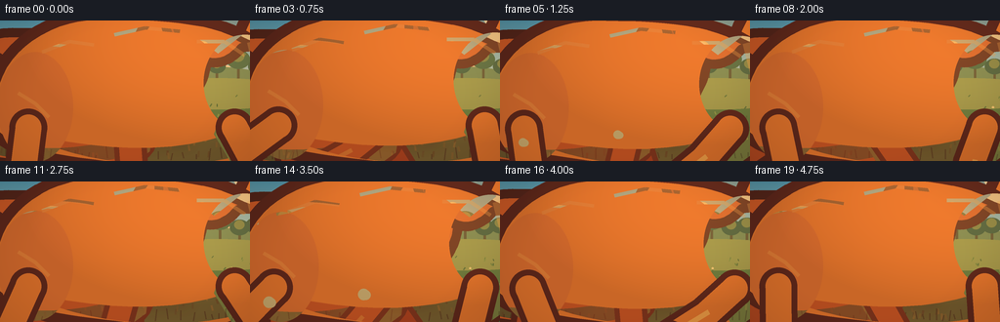
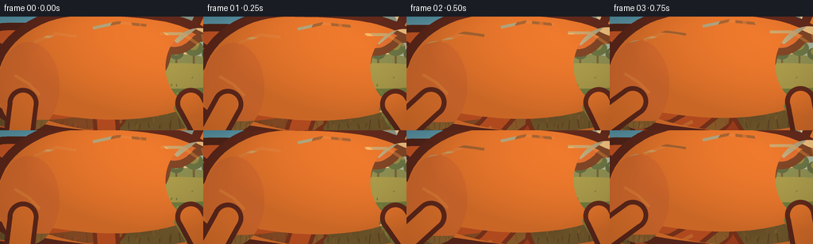
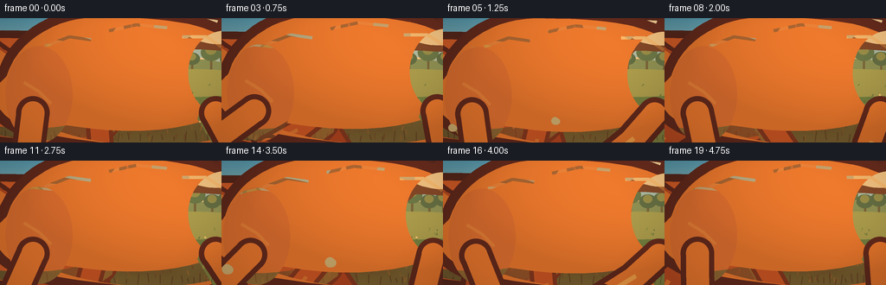
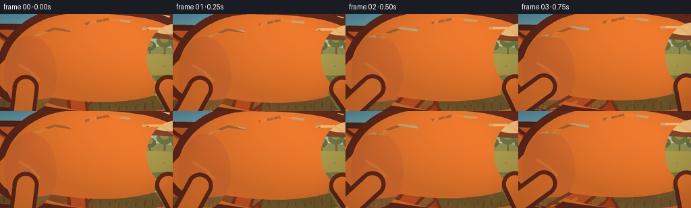
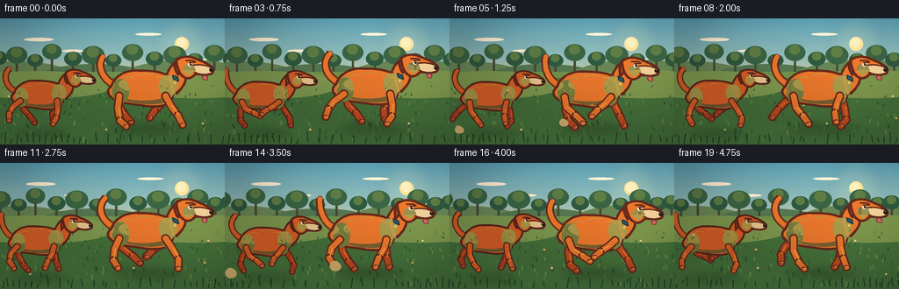
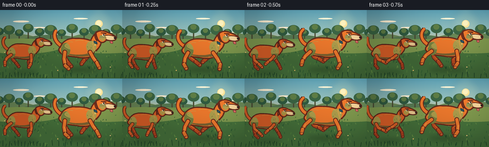

CODING AGENTS AS PIXEL WORLD MODELS
traex/DeepSeek-V4.1-Flash · instance_preservation_0001
点击播放 · 原生 RGB 像素
逐轮保存的候选
回放视频、检查图与代码变化。
每份候选均可单独播放。实际图片检查记录在下方工具轨迹中。
候选 01播放与检查图
点击播放 · 原生 RGB 像素


展开代码变化
--- 上一保存版本
+++ 本次保存版本
@@ -0,0 +1,758 @@
+"""Procedural PixelWorld entry: two orange dogs running through a sunlit park."""
+
+from __future__ import annotations
+
+import math
+from pathlib import Path
+
+import numpy as np
+from PIL import Image, ImageDraw, ImageFilter
+
+import artifact_io
+
+
+WIDTH = 256
+HEIGHT = 144
+FRAMES = 20
+FPS = 4.0
+SS = 4 # Draw at 4x and downsample for clean edges.
+
+CASE_DIR = Path(__file__).resolve().parent
+TAU = math.tau
+
+
+def rgba(hex_color: str, alpha: int = 255) -> tuple[int, int, int, int]:
+ value = hex_color.lstrip("#")
+ return (int(value[0:2], 16), int(value[2:4], 16), int(value[4:6], 16), alpha)
+
+
+def mix(a, b, t):
+ return tuple(round(x + (y - x) * t) for x, y in zip(a, b))
+
+
+def cubic(p0, p1, p2, p3, steps=14):
+ out = []
+ for index in range(steps + 1):
+ t = index / steps
+ u = 1.0 - t
+ out.append(
+ (
+ u**3 * p0[0] + 3 * u * u * t * p1[0] + 3 * u * t * t * p2[0] + t**3 * p3[0],
+ u**3 * p0[1] + 3 * u * u * t * p1[1] + 3 * u * t * t * p2[1] + t**3 * p3[1],
+ )
+ )
+ return out
+
+
+def curve_path(points, commands):
+ """Build a smooth closed path from cubic commands.
+
+ Each command is (control_1, control_2, end). The first point is the start.
+ """
+ path = [points]
+ current = points
+ for control_1, control_2, end in commands:
+ segment = cubic(current, control_1, control_2, end)
+ path.extend(segment[1:])
+ current = end
+ return path
+
+
+def bezier_points(p0, p1, p2, p3, steps=18):
+ return cubic(p0, p1, p2, p3, steps)
+
+
+def smoothstep(t):
+ t = max(0.0, min(1.0, t))
+ return t * t * (3.0 - 2.0 * t)
+
+
+def periodic_lerp(values, phase):
+ phase %= len(values)
+ low = int(math.floor(phase))
+ high = (low + 1) % len(values)
+ t = smoothstep(phase - low)
+ return tuple(
+ (
+ values[low][joint][0] * (1.0 - t) + values[high][joint][0] * t,
+ values[low][joint][1] * (1.0 - t) + values[high][joint][1] * t,
+ )
+ for joint in range(3)
+ )
+
+
+def gradient_image(size, stops):
+ width, height = size
+ y = np.linspace(0.0, 1.0, height)
+ positions = np.array([stop[0] for stop in stops], dtype=float)
+ colors = np.array([stop[1] for stop in stops], dtype=float)
+ rows = np.empty((height, 3), dtype=np.float32)
+ for channel in range(3):
+ rows[:, channel] = np.interp(y, positions, colors[:, channel])
+ array = np.repeat(rows[:, None, :], width, axis=1)
+ return Image.fromarray(np.clip(array, 0, 255).astype(np.uint8)).convert("RGBA")
+
+
+def draw_polygon(draw, points, fill, outline=None, width=1):
+ draw.polygon(points, fill=fill)
+ if outline is not None:
+ draw.line(points + [points[0]], fill=outline, width=width, joint="curve")
+
+
+def draw_outlined_stroke(draw, points, fill, outline, width, outline_width=None):
+ outline_width = outline_width or width + 4
+ draw.line(points, fill=outline, width=outline_width, joint="curve")
+ for point in (points[0], points[-1]):
+ radius = outline_width / 2
+ draw.ellipse(
+ (point[0] - radius, point[1] - radius, point[0] + radius, point[1] + radius),
+ fill=outline,
+ )
+ draw.line(points, fill=fill, width=width, joint="curve")
+ for point in (points[0], points[-1]):
+ radius = width / 2
+ draw.ellipse(
+ (point[0] - radius, point[1] - radius, point[0] + radius, point[1] + radius),
+ fill=fill,
+ )
+
+
+def transformed(points, origin, scale):
+ ox, oy = origin
+ return [(ox + x * scale, oy + y * scale) for x, y in points]
+
+
+def transform_point(point, origin, scale):
+ return (origin[0] + point[0] * scale, origin[1] + point[1] * scale)
+
+
+# Relative joint positions for one complete eight-frame running cycle.
+REAR_LEG = [
+ ((-2, 16), (1, 32), (9, 39)),
+ ((-8, 13), (-11, 27), (-6, 37)),
+ ((-14, 9), (-23, 18), (-30, 27)),
+ ((-11, 11), (-14, 24), (-7, 35)),
+ ((2, 13), (15, 24), (24, 33)),
+ ((7, 12), (20, 17), (30, 22)),
+ ((4, 15), (14, 25), (21, 35)),
+ ((0, 16), (7, 31), (14, 39)),
+]
+
+FRONT_LEG = [
+ ((7, 13), (16, 25), (22, 37)),
+ ((10, 14), (17, 28), (14, 39)),
+ ((5, 15), (7, 31), (0, 39)),
+ ((-3, 12), (-10, 24), (-14, 35)),
+ ((-8, 9), (-18, 17), (-25, 24)),
+ ((-9, 7), (-20, 13), (-28, 19)),
+ ((-5, 10), (-9, 21), (-8, 32)),
+ ((1, 12), (5, 26), (9, 37)),
+]
+
+
+def leg_points(hip, profile, phase):
+ knee, ankle, paw = periodic_lerp(profile, phase)
+ return (
+ hip,
+ (hip[0] + knee[0], hip[1] + knee[1]),
+ (hip[0] + ankle[0], hip[1] + ankle[1]),
+ (hip[0] + paw[0], hip[1] + paw[1]),
+ )
+
+
+def draw_leg(draw, origin, scale, hip, profile, phase, palette, far=False):
+ points = [transform_point(point, origin, scale) for point in leg_points(hip, profile, phase)]
+ outline = palette["deep"]
+ fill = palette["shadow"] if far else palette["coat"]
+ highlight = palette["light"] if not far else palette["coat"]
+ thickness = max(2, round(7.5 * scale))
+ outline_width = max(3, round(11.0 * scale))
+ draw_outlined_stroke(draw, points[:3], fill, outline, thickness, outline_width)
+ draw_outlined_stroke(draw, points[2:], fill, outline, max(2, thickness - 1), outline_width - 1)
+
+ # A short, bright fur edge makes each leg read as a rounded limb.
+ knee = points[1]
+ ankle = points[2]
+ draw.line(
+ (
+ knee[0] + 1.1 * scale,
+ knee[1] - 1.0 * scale,
+ ankle[0] + 0.8 * scale,
+ ankle[1] - 1.2 * scale,
+ ),
+ fill=highlight,
+ width=max(1, round(1.5 * scale)),
+ )
+
+ paw = points[3]
+ paw_w = max(5, round(8.0 * scale))
+ paw_h = max(3, round(4.3 * scale))
+ draw.ellipse(
+ (
+ paw[0] - paw_w / 2,
+ paw[1] - paw_h / 2,
+ paw[0] + paw_w / 2,
+ paw[1] + paw_h / 2,
+ ),
+ fill=outline,
+ )
+ draw.ellipse(
+ (
+ paw[0] - paw_w / 2 + 1.0 * scale,
+ paw[1] - paw_h / 2 + 1.0 * scale,
+ paw[0] + paw_w / 2 - 0.8 * scale,
+ paw[1] + paw_h / 2,
+ ),
+ fill=fill,
+ )
+ draw.line(
+ (
+ paw[0] + 0.8 * scale,
+ paw[1] - 0.8 * scale,
+ paw[0] + 2.1 * scale,
+ paw[1] + 0.5 * scale,
+ ),
+ fill=palette["cream"],
+ width=max(1, round(0.8 * scale)),
+ )
+
+
+def body_path():
+ return curve_path(
+ (-47, -5),
+ [
+ ((-43, -18), (-28, -26), (-13, -25)),
+ ((3, -25), (20, -24), (30, -16)),
+ ((34, -9), (35, 5), (30, 14)),
+ ((24, 23), (5, 23), (-9, 20)),
+ ((-24, 18), (-42, 17), (-49, 8)),
+ ((-53, 4), (-52, -1), (-47, -5)),
+ ],
+ )
+
+
+def neck_path():
+ return curve_path(
+ (23, -16),
+ [
+ ((26, -25), (31, -34), (39, -38)),
+ ((43, -35), (48, -26), (49, -14)),
+ ((48, -7), (44, -2), (37, 5)),
+ ((32, -1), (29, -9), (23, -16)),
+ ],
+ )
+
+
+def head_path():
+ return curve_path(
+ (37, -38),
+ [
+ ((44, -45), (56, -44), (65, -39)),
+ ((73, -36), (80, -33), (84, -28)),
+ ((86, -25), (85, -21), (79, -20)),
+ ((72, -19), (66, -21), (61, -20)),
+ ((57, -15), (51, -13), (46, -17)),
+ ((41, -20), (38, -28), (37, -38)),
+ ],
+ )
+
+
+def muzzle_path():
+ return curve_path(
+ (57, -31),
+ [
+ ((65, -34), (77, -32), (84, -28)),
+ ((86, -25), (84, -21), (77, -20)),
+ ((68, -19), (61, -22), (57, -25)),
+ ((56, -27), (56, -29), (57, -31)),
+ ],
+ )
+
+
+def ear_path(swing):
+ tip_x = 38.0 + swing * 1.8
+ tip_y = -25.0 + abs(swing) * 0.8
+ return curve_path(
+ (43, -40),
+ [
+ ((40, -43), (36, -39), (35, -34)),
+ ((34, -31), (35 + swing * 0.4, tip_y), (tip_x, tip_y + 5)),
+ ((41, -27), (45, -29), (48, -35)),
+ ((48, -38), (46, -40), (43, -40)),
+ ],
+ )
+
+
+def tail_center_points(swing):
+ return bezier_points(
+ (-46, -8),
+ (-59, -15),
+ (-66 - swing * 0.8, -32),
+ (-58 + swing * 2.0, -43 - abs(swing)),
+ 20,
+ )
+
+
+def draw_dog(image, origin, scale, phase, palette, variant="lead"):
+ layer = Image.new("RGBA", image.size, (0, 0, 0, 0))
+ draw = ImageDraw.Draw(layer)
+ scale = scale * SS
+
+ # Draw far limbs first, then the body, then near limbs.
+ far_shift = 1.1
+ draw_leg(
+ draw,
+ (origin[0] - far_shift * scale, origin[1] - 1.2 * scale),
+ scale,
+ (-34, 9),
+ REAR_LEG,
+ phase + 3.6,
+ palette,
+ far=True,
+ )
+ draw_leg(
+ draw,
+ (origin[0] - far_shift * scale, origin[1] - 1.2 * scale),
+ scale,
+ (25, 9),
+ FRONT_LEG,
+ phase + 3.6,
+ palette,
+ far=True,
+ )
+
+ body = transformed(body_path(), origin, scale)
+ neck = transformed(neck_path(), origin, scale)
+ head = transformed(head_path(), origin, scale)
+ muzzle = transformed(muzzle_path(), origin, scale)
+
+ # Tail is bushy, tapered, and follows the body's arc.
+ tail = [transform_point(point, origin, scale) for point in tail_center_points(math.sin(phase) * 2.4)]
+ outline_width = max(4, round(10.5 * scale))
+ for index, point in enumerate(tail):
+ t = index / max(1, len(tail) - 1)
+ radius = (5.4 - 2.1 * t) * scale
+ draw.ellipse(
+ (point[0] - radius, point[1] - radius, point[0] + radius, point[1] + radius),
+ fill=palette["deep"],
+ )
+ draw.line(tail, fill=palette["deep"], width=outline_width, joint="curve")
+ for index, point in enumerate(tail):
+ t = index / max(1, len(tail) - 1)
+ radius = (4.0 - 1.5 * t) * scale
+ color = palette["shadow"] if index < len(tail) * 0.5 else palette["coat"]
+ draw.ellipse(
+ (point[0] - radius, point[1] - radius, point[0] + radius, point[1] + radius),
+ fill=color,
+ )
+ draw.line(tail, fill=palette["coat"], width=max(2, round(6.0 * scale)), joint="curve")
+
+ draw_polygon(draw, neck, palette["coat"], palette["deep"], max(3, round(3.2 * scale)))
+ draw_polygon(draw, body, palette["coat"], palette["deep"], max(3, round(3.2 * scale)))
+
+ # Soft underside and chest shading.
+ belly = curve_path(
+ (-40, 9),
+ [
+ ((-25, 18), (4, 22), (25, 16)),
+ ((30, 13), (33, 8), (33, 3)),
+ ((21, 14), (-6, 18), (-40, 9)),
+ ],
+ )
+ draw_polygon(draw, transformed(belly, origin, scale), rgba(palette["shadow"], 110))
+ chest = transformed(
+ [(23, -7), (32, 1), (30, 15), (23, 20), (17, 10)],
+ origin,
+ scale,
+ )
+ draw_polygon(draw, chest, rgba(palette["light"], 85))
+
+ # Shoulder and haunch fur planes give the flat body some form.
+ for center, rx, ry, angle in (
+ ((26, -5), 12, 14, -0.2),
+ ((-35, 2), 11, 16, 0.25),
+ ):
+ cx, cy = transform_point(center, origin, scale)
+ box = (cx - rx * scale, cy - ry * scale, cx + rx * scale, cy + ry * scale)
+ draw.ellipse(box, fill=rgba(palette["light"], 62))
+
+ # Legs nearest the camera are deliberately stronger in value.
+ draw_leg(draw, origin, scale, (-37, 8), REAR_LEG, phase, palette, far=False)
+ draw_leg(draw, origin, scale, (23, 8), FRONT_LEG, phase, palette, far=False)
+
+ # Neck fur and collar.
+ draw.line(
+ transformed([(28, -17), (31, -5), (34, 5)], origin, scale),
+ fill=rgba(palette["light"], 120),
+ width=max(2, round(3.0 * scale)),
+ )
+ if variant == "lead":
+ collar = transformed([(32, -19), (39, -16), (40, -11), (33, -14)], origin, scale)
+ draw_polygon(draw, collar, rgba("#315C72"), rgba("#173845"), max(2, round(1.5 * scale)))
+ tag = transform_point((35, -9), origin, scale)
+ draw.ellipse(
+ (
+ tag[0] - 1.7 * scale,
+ tag[1] - 1.7 * scale,
+ tag[0] + 1.7 * scale,
+ tag[1] + 1.7 * scale,
+ ),
+ fill=rgba("#E7C76A"),
+ )
+
+ ear = transformed(ear_path(math.sin(phase + 0.4) * 2.0), origin, scale)
+ draw_polygon(draw, ear, palette["shadow"], palette["deep"], max(3, round(3.0 * scale)))
+ inner_ear = transformed(
+ [(39, -37), (36, -33), (37, -28), (43, -35)],
+ origin,
+ scale,
+ )
+ draw_polygon(draw, inner_ear, rgba(palette["ear"]))
+
+ draw_polygon(draw, head, palette["coat"], palette["deep"], max(3, round(3.2 * scale)))
+ draw_polygon(draw, muzzle, palette["cream"], palette["deep"], max(2, round(2.0 * scale)))
+
+ # Brow and cheek shadows frame the eye.
+ cheek = transformed([(47, -32), (58, -33), (62, -25), (53, -18), (45, -24)], origin, scale)
+ draw_polygon(draw, cheek, rgba(palette["light"], 80))
+ eye = transform_point((55, -33), origin, scale)
+ eye_r = 3.0 * scale
+ draw.ellipse(
+ (eye[0] - eye_r, eye[1] - eye_r, eye[0] + eye_r, eye[1] + eye_r),
+ fill=rgba("#F8E8BF"),
+ )
+ pupil = transform_point((56, -33), origin, scale)
+ pupil_r = 1.8 * scale
+ draw.ellipse(
+ (pupil[0] - pupil_r, pupil[1] - pupil_r, pupil[0] + pupil_r, pupil[1] + pupil_r),
+ fill=rgba("#201814"),
+ )
+ glint = transform_point((56.7, -33.7), origin, scale)
+ glint_r = 0.6 * scale
+ draw.ellipse(
+ (glint[0] - glint_r, glint[1] - glint_r, glint[0] + glint_r, glint[1] + glint_r),
+ fill=rgba("#FFFFFF"),
+ )
+ brow = transformed([(49, -38), (58, -38), (62, -36), (53, -35)], origin, scale)
+ draw.line(brow, fill=rgba(palette["deep"]), width=max(2, round(2.0 * scale)))
+
+ nose = transform_point((83, -26), origin, scale)
+ draw.ellipse(
+ (
+ nose[0] - 3.5 * scale,
+ nose[1] - 2.8 * scale,
+ nose[0] + 1.5 * scale,
+ nose[1] + 2.5 * scale,
+ ),
+ fill=rgba("#211916"),
+ )
+ nose_glint = transform_point((81.8, -27.3), origin, scale)
+ draw.ellipse(
+ (
+ nose_glint[0] - 1.1 * scale,
+ nose_glint[1] - 0.8 * scale,
+ nose_glint[0] + 0.9 * scale,
+ nose_glint[1] + 0.8 * scale,
+ ),
+ fill=rgba("#8B6550"),
+ )
+ mouth = transformed([(79, -21), (73, -19), (69, -20)], origin, scale)
+ draw.line(mouth, fill=rgba(palette["deep"]), width=max(1, round(1.3 * scale)))
+
+ if variant == "lead":
+ tongue_wave = math.sin(phase * 1.3 + 0.8)
+ tongue = transformed(
+ [
+ (73, -19),
+ (77, -17),
+ (76 + tongue_wave, -12),
+ (72 + tongue_wave * 0.5, -13),
+ (70, -17),
+ ],
+ origin,
+ scale,
+ )
+ draw_polygon(draw, tongue, rgba("#D96B66"), rgba("#79383B"), max(1, round(1.0 * scale)))
+
+ # A few short highlight strokes suggest coarse orange fur.
+ highlight_points = (
+ [(-33, -14), (-25, -17), (-18, -16)],
+ [(-12, -19), (-3, -21), (7, -20)],
+ [(12, -17), (20, -17), (26, -13)],
+ [(-40, -2), (-35, 1), (-31, 5)],
+ )
+ for stroke in highlight_points:
+ draw.line(
+ transformed(stroke, origin, scale),
+ fill=rgba(palette["light"], 125),
+ width=max(1, round(1.1 * scale)),
+ )
+
+ image.alpha_composite(layer)
+
+
+def draw_shadow(image, center, width, height, alpha):
+ shadow = Image.new("RGBA", image.size, (0, 0, 0, 0))
+ draw = ImageDraw.Draw(shadow)
+ x, y = center
+ draw.ellipse(
+ (x - width / 2, y - height / 2, x + width / 2, y + height / 2),
+ fill=(19, 44, 31, alpha),
+ )
+ shadow = shadow.filter(ImageFilter.GaussianBlur(5 * SS))
+ image.alpha_composite(shadow)
+
+
+def draw_background(frame_index):
+ canvas = gradient_image(
+ (WIDTH * SS, HEIGHT * SS),
+ [
+ (0.00, (91, 162, 187)),
+ (0.32, (151, 196, 196)),
+ (0.52, (238, 211, 156)),
+ (0.58, (245, 205, 141)),
+ (0.66, (116, 150, 83)),
+ (1.00, (42, 79, 52)),
+ ],
+ )
+ draw = ImageDraw.Draw(canvas, "RGBA")
+ s = SS
+
+ # Sun and atmospheric glow.
+ glow = Image.new("RGBA", canvas.size, (0, 0, 0, 0))
+ glow_draw = ImageDraw.Draw(glow)
+ sx, sy = 207 * s, 29 * s
+ for radius, alpha in ((30, 18), (20, 28), (12, 38)):
+ glow_draw.ellipse(
+ (sx - radius * s, sy - radius * s, sx + radius * s, sy + radius * s),
+ fill=(255, 229, 166, alpha),
+ )
+ glow = glow.filter(ImageFilter.GaussianBlur(7 * s))
+ canvas.alpha_composite(glow)
+ draw.ellipse(
+ (sx - 8 * s, sy - 8 * s, sx + 8 * s, sy + 8 * s),
+ fill=(255, 230, 160, 230),
+ )
+ draw.ellipse(
+ (sx - 6 * s, sy - 7 * s, sx + 5 * s, sy + 4 * s),
+ fill=(255, 243, 197, 245),
+ )
+
+ # Long, thin clouds.
+ for cx, cy, cw, ch, alpha in (
+ (44, 24, 34, 4, 90),
+ (83, 37, 25, 3, 75),
+ (169, 18, 30, 3, 62),
+ (224, 47, 24, 3, 58),
+ ):
+ drift = (frame_index * 0.22) % 8
+ draw.ellipse(
+ (
+ (cx - cw / 2 + drift) * s,
+ (cy - ch / 2) * s,
+ (cx + cw / 2 + drift) * s,
+ (cy + ch / 2) * s,
+ ),
+ fill=(255, 246, 221, alpha),
+ )
+
+ # Distant layered hills.
+ draw.ellipse((-55 * s, 49 * s, 92 * s, 94 * s), fill=(107, 139, 92, 230))
+ draw.ellipse((32 * s, 52 * s, 184 * s, 98 * s), fill=(86, 124, 86, 235))
+ draw.ellipse((134 * s, 47 * s, 292 * s, 95 * s), fill=(103, 137, 89, 230))
+
+ # Parallax tree line: trunks first, then layered crowns.
+ tree_positions = [
+ (-14, 45, 10),
+ (7, 42, 12),
+ (28, 48, 9),
+ (47, 38, 11),
+ (71, 46, 10),
+ (94, 42, 13),
+ (117, 48, 9),
+ (139, 39, 12),
+ (164, 46, 10),
+ (187, 42, 13),
+ (210, 47, 9),
+ (232, 40, 12),
+ (252, 47, 10),
+ ]
+ shift = (frame_index * 1.7) % 256
+ for index, (tx, ty, crown) in enumerate(tree_positions):
+ x = ((tx - shift + 25) % 282) - 13
+ trunk = (x - 1.1, ty + 4, x + 1.3, 76)
+ draw.rectangle(
+ tuple(value * s for value in trunk),
+ fill=(73, 77, 53, 210),
+ )
+ crown_color = (47, 91, 66, 235) if index % 2 == 0 else (58, 102, 70, 235)
+ highlight_color = (93, 127, 72, 135)
+ draw.ellipse(
+ ((x - crown) * s, (ty - crown * 0.8) * s, (x + crown) * s, (ty + crown * 0.8) * s),
+ fill=crown_color,
+ )
+ draw.ellipse(
+ ((x - crown * 0.55) * s, (ty - crown * 0.75) * s, (x + crown * 0.5) * s, (ty + crown * 0.2) * s),
+ fill=highlight_color,
+ )
+
+ # Warm meadow with a sunlit strip at the tree line.
+ draw.rectangle((0, 61 * s, WIDTH * s, 83 * s), fill=(114, 151, 79, 230))
+ draw.rectangle((0, 68 * s, WIDTH * s, 144 * s), fill=(70, 116, 62, 240))
+ draw.ellipse((-45 * s, 60 * s, 130 * s, 92 * s), fill=(127, 157, 83, 150))
+ draw.ellipse((135 * s, 59 * s, 310 * s, 91 * s), fill=(125, 154, 80, 140))
+
+ # Moving grass and flowers create the running parallax.
+ rng = np.random.default_rng(90210)
+ grass = []
+ for _ in range(165):
+ gx = float(rng.uniform(0, 256))
+ gy = float(rng.uniform(76, 143))
+ depth = (gy - 76) / 67
+ height = 1.8 + 5.5 * depth * rng.uniform(0.55, 1.0)
+ lean = rng.uniform(-2.0, 2.0)
+ color_choice = int(rng.integers(0, 4))
+ grass.append((gx, gy, height, lean, color_choice))
+ colors = [
+ (43, 92, 52, 170),
+ (78, 127, 63, 170),
+ (97, 144, 71, 145),
+ (55, 103, 57, 190),
+ ]
+ for gx, gy, height, lean, color_choice in grass:
+ x = (gx - frame_index * (2.0 + (gy - 76) * 0.105)) % 270 - 7
+ draw.line(
+ (x * s, gy * s, (x + lean) * s, (gy - height) * s),
+ fill=colors[color_choice],
+ width=max(1, round((1.0 + (gy - 76) / 55) * s)),
+ )
+
+ # Tiny flowers, sparse enough not to distract from the dogs.
+ flower_positions = [
+ (17, 94, "#F4D883"),
+ (42, 119, "#F2B95D"),
+ (89, 87, "#E9D6A0"),
+ (128, 132, "#F5CE73"),
+ (194, 104, "#EFB66C"),
+ (238, 125, "#F3D58A"),
+ ]
+ for fx, fy, color in flower_positions:
+ x = (fx - frame_index * (2.0 + (fy - 76) * 0.105)) % 270 - 7
+ draw.line((x * s, fy * s, x * s, (fy - 5) * s), fill=(55, 101, 55, 180), width=max(1, round(1.0 * s)))
+ draw.ellipse(
+ ((x - 1.2) * s, (fy - 6.2) * s, (x + 1.2) * s, (fy - 3.8) * s),
+ fill=rgba(color, 220),
+ )
+
+ # Foreground grass rim adds depth.
+ for index in range(30):
+ x = ((index * 13 + 5 - frame_index * 5.0) % 280) - 12
+ base_y = 141 + (index % 3) * 1.1
+ height = 5 + (index * 7 % 8)
+ draw.line(
+ (x * s, base_y * s, (x + (index % 3 - 1) * 1.5) * s, (base_y - height) * s),
+ fill=(31, 70, 43, 220),
+ width=max(1, round(1.2 * s)),
+ )
+ return canvas
+
+
+def draw_dust(image, frame_index):
+ draw = ImageDraw.Draw(image, "RGBA")
+ s = SS
+ for dog_x, base_y, offset in ((61, 128, 0.0), (158, 120, 0.7)):
+ phase = frame_index / 8 * TAU + offset
+ if math.sin(phase * 1.0) > -0.35:
+ continue
+ for index in range(3):
+ age = (frame_index + index * 0.27) % 4
+ px = dog_x - 31 - age * 4.2
+ py = base_y - 1 - age * 1.3
+ radius = (2.0 + age * 1.5) * s
+ alpha = int(36 - age * 7)
+ draw.ellipse(
+ (px * s - radius, py * s - radius, px * s + radius, py * s + radius),
+ fill=(211, 181, 119, max(0, alpha)),
+ )
+
+
+def render_frame(frame_index):
+ image = draw_background(frame_index)
+ s = SS
+
+ phase_a = frame_index / 8.0 * TAU
+ phase_b = phase_a + 2.5
+ lead_bob = -2.0 + 1.8 * math.sin(phase_a * 2 + 0.3)
+ trail_bob = -1.0 + 1.4 * math.sin(phase_b * 2 - 0.2)
+ lead_x = 158 + 3.5 * math.sin(phase_a + 0.4)
+ trail_x = 61 + 3.0 * math.sin(phase_b + 0.2)
+
+ draw_shadow(image, (lead_x * s, 126 * s), 77 * s, 8 * s, 84)
+ draw_shadow(image, (trail_x * s, 131 * s), 61 * s, 7 * s, 80)
+
+ lead_palette = {
+ "coat": "#EA7A2E",
+ "light": "#F7A64B",
+ "shadow": "#BC4D22",
+ "deep": "#642B1D",
+ "cream": "#F1D5A0",
+ "ear": "#A94422",
+ }
+ trail_palette = {
+ "coat": "#D96128",
+ "light": "#EF933B",
+ "shadow": "#A93F1F",
+ "deep": "#5A281C",
+ "cream": "#EACB95",
+ "ear": "#94371E",
+ }
+
+ draw_dog(
+ image,
+ (trail_x * s, (91 + trail_bob) * s),
+ 0.76 * s,
+ phase_b,
+ trail_palette,
+ variant="trail",
+ )
+ draw_dog(
+ image,
+ (lead_x * s, (83 + lead_bob) * s),
+ 0.88 * s,
+ phase_a,
+ lead_palette,
+ variant="lead",
+ )
+ draw_dust(image, frame_index)
+
+ # Warm late-day grade, gently lifted shadows.
+ array = np.asarray(image.convert("RGB"), dtype=np.float32) / 255.0
+ yy, xx = np.mgrid[0 : image.height, 0 : image.width]
+ light = np.clip(1.0 - ((xx / image.width - 0.82) ** 2 + (yy / image.height - 0.15) ** 2) * 0.30, 0.84, 1.04)
+ array *= light[:, :, None]
+ array[:, :, 0] *= 1.025
+ array[:, :, 2] *= 0.975
+ array = np.clip(array, 0.0, 1.0)
+ graded = Image.fromarray((array * 255.0 + 0.5).astype(np.uint8), "RGB")
+
+ # A restrained vignette keeps the eye on the pair.
+ vignette = np.ones((image.height, image.width), dtype=np.float32)
+ nx = (xx / image.width - 0.5) * 2
+ ny = (yy / image.height - 0.5) * 2
+ edge = np.clip((nx * nx * 0.62 + ny * ny * 0.38 - 0.30) / 0.85, 0.0, 1.0)
+ vignette *= 1.0 - edge * 0.12
+ graded_array = np.asarray(graded, dtype=np.float32) * vignette[:, :, None]
+ graded = Image.fromarray(np.clip(graded_array + 0.5, 0, 255).astype(np.uint8), "RGB")
+
+ frame = graded.resize((WIDTH, HEIGHT), Image.Resampling.LANCZOS)
+ return np.asarray(frame, dtype=np.uint8)
+
+
+def main():
+ frames = np.stack([render_frame(index) for index in range(FRAMES)])
+ artifact_io.save(frames, CASE_DIR)
+ print(f"Wrote {FRAMES} frames at {WIDTH}x{HEIGHT}, {FPS:g} fps to {CASE_DIR}")
+
+
+if __name__ == "__main__":
+ main()
候选 02播放与检查图
点击播放 · 原生 RGB 像素


展开代码变化
--- 上一保存版本
+++ 本次保存版本
@@ -660,7 +660,7 @@
def draw_dust(image, frame_index):
draw = ImageDraw.Draw(image, "RGBA")
s = SS
- for dog_x, base_y, offset in ((61, 128, 0.0), (158, 120, 0.7)):
+ for dog_x, base_y, offset in ((48, 130, 0.0), (167, 122, 0.7)):
phase = frame_index / 8 * TAU + offset
if math.sin(phase * 1.0) > -0.35:
continue
@@ -684,8 +684,8 @@
phase_b = phase_a + 2.5
lead_bob = -2.0 + 1.8 * math.sin(phase_a * 2 + 0.3)
trail_bob = -1.0 + 1.4 * math.sin(phase_b * 2 - 0.2)
- lead_x = 158 + 3.5 * math.sin(phase_a + 0.4)
- trail_x = 61 + 3.0 * math.sin(phase_b + 0.2)
+ lead_x = 167 + 3.5 * math.sin(phase_a + 0.4)
+ trail_x = 48 + 2.6 * math.sin(phase_b + 0.2)
draw_shadow(image, (lead_x * s, 126 * s), 77 * s, 8 * s, 84)
draw_shadow(image, (trail_x * s, 131 * s), 61 * s, 7 * s, 80)
@@ -710,7 +710,7 @@
draw_dog(
image,
(trail_x * s, (91 + trail_bob) * s),
- 0.76 * s,
+ 0.70 * s,
phase_b,
trail_palette,
variant="trail",
候选 03播放与检查图
点击播放 · 原生 RGB 像素

展开代码变化
--- 上一保存版本
+++ 本次保存版本
@@ -296,7 +296,6 @@
def draw_dog(image, origin, scale, phase, palette, variant="lead"):
layer = Image.new("RGBA", image.size, (0, 0, 0, 0))
draw = ImageDraw.Draw(layer)
- scale = scale * SS
# Draw far limbs first, then the body, then near limbs.
far_shift = 1.1
候选 04播放与检查图
点击播放 · 原生 RGB 像素


展开代码变化
--- 上一保存版本
+++ 本次保存版本
@@ -732,7 +732,7 @@
array[:, :, 0] *= 1.025
array[:, :, 2] *= 0.975
array = np.clip(array, 0.0, 1.0)
- graded = Image.fromarray((array * 255.0 + 0.5).astype(np.uint8), "RGB")
+ graded = Image.fromarray((array * 255.0 + 0.5).astype(np.uint8))
# A restrained vignette keeps the eye on the pair.
vignette = np.ones((image.height, image.width), dtype=np.float32)
@@ -741,7 +741,7 @@
edge = np.clip((nx * nx * 0.62 + ny * ny * 0.38 - 0.30) / 0.85, 0.0, 1.0)
vignette *= 1.0 - edge * 0.12
graded_array = np.asarray(graded, dtype=np.float32) * vignette[:, :, None]
- graded = Image.fromarray(np.clip(graded_array + 0.5, 0, 255).astype(np.uint8), "RGB")
+ graded = Image.fromarray(np.clip(graded_array + 0.5, 0, 255).astype(np.uint8))
frame = graded.resize((WIDTH, HEIGHT), Image.Resampling.LANCZOS)
return np.asarray(frame, dtype=np.uint8)
可观测工具轨迹
实际执行的命令与返回图片。
命令 1exit 0
/bin/bash -c "pwd && rg --files -g 'prompt.txt' -g 'GENERATION_RULES.md' -g 'task_spec.json' -g '"'!**/.git/**'"'"
命令 2exit 0
/bin/bash -c 'ls -la'
命令 3exit 0
/bin/bash -c 'git status --short --branch'
命令 4exit 0
/bin/bash -c 'cat prompt.txt'
命令 5exit 0
/bin/bash -c 'cat GENERATION_RULES.md'
命令 6exit 0
/bin/bash -c 'cat task_spec.json'
命令 7exit 0
/bin/bash -c "sed -n '1,240p' artifact_io.py"
命令 8exit 0
/bin/bash -c "sed -n '1,260p' player_template.html"
命令 9exit 0
/bin/bash -c "python - <<'PY'
import PIL, numpy
print('PIL', PIL.__version__, 'numpy', numpy.__version__)
PY"命令 10exit 1
/bin/bash -c 'python generate.py'
命令 11exit 0
/bin/bash -c 'python generate.py'
命令 12exit 0
/bin/bash -c 'ls -lh frames inspection.png transition_check.png pixels.npz index.html generate.py'
命令 13exit 0
/bin/bash -c 'which chafa || true; which viu || true; which jp2 || true; which img2txt || true'
命令 14exit 0
/bin/bash -c "python - <<'PY'
from PIL import Image
import numpy as np
for f in [0,3,7,11,15,19]:
a=np.asarray(Image.open(f'frames/{f:02d}.png').convert('RGB')).astype(float)
print(f, 'mean', np.round(a.mean((0,1)),1), 'std', round(float(a.std()),1), 'range', (int(a.min()),int(a.max())))
PY"命令 15exit 0
/bin/bash -c "python - <<'PY'
from PIL import Image
import numpy as np
imgs=[np.asarray(Image.open(f'frames/{i:02d}.png').convert('RGB')).astype(np.int16) for i in range(20)]
for i in range(1,20):
d=np.abs(imgs[i]-imgs[i-1])
print(i, round(float(d.mean()),2), int((d.max(2)>12).sum()))
PY"命令 16exit 0
/bin/bash -c "python - <<'PY'
from PIL import Image
import numpy as np
chars=' .:-=+*#%@'
for fi in [0,2,4,6,8,10,12,14,16,18]:
im=np.asarray(Image.open(f'frames/{fi:02d}.png').convert('RGB').crop((0,55,256,144)).resize((86,30)))
lum=im.mean(2)
print('\\nFRAME',fi)
for row in lum:
print(''.join(chars[min(9,int(v/25.6))] for v in row))
PY"命令 17exit 0
/bin/bash -c "rg -n \"dog_x|lead_x|trail_x|0\\.76\" generate.py"
命令 18exit 0
/bin/bash -c 'python generate.py'
命令 19exit 0
/bin/bash -c "python - <<'PY'
from PIL import Image
import numpy as np
from collections import deque
for fi in [0,4,8,12,16]:
a=np.asarray(Image.open(f'frames/{fi:02d}.png').convert('RGB')).astype(int)
r,g,b=a[:,:,0],a[:,:,1],a[:,:,2]
# orange-ish dog pixels, excluding warm sky/grass highlights
m=(r>125)&(r>g*1.28)&(g>b*1.35)&(g<165)&(b<105)
ys,xs=np.where(m)
print(fi, 'orange count',len(xs),'bbox', (xs.min(),ys.min(),xs.max(),ys.max()), 'mean y',round(ys.mean(),1))
# count orange pixels in dog bands
for lo,hi in [(0,120),(120,256)]:
print(' ',lo,hi,int(m[:,lo:hi].sum()))
PY"命令 20exit 0
/bin/bash -c "python - <<'PY'
from PIL import Image
import numpy as np
chars=' .:-=+*#%@'
im=np.asarray(Image.open('frames/00.png').convert('RGB').resize((128,72)))
# print color quantized labels based on dog palette
for row in im:
out=''
for r,g,b in row:
if r>150 and 55<g<145 and b<85 and r>g*1.25: out+='D'
elif g>90 and g>r*0.85 and g>b*1.2: out+='.'
elif r>180 and g>150 and b>105: out+='~'
elif r+g+b<210: out+='#'
else: out+=' '
print(out)
PY"命令 21exit 0
/bin/bash -c "python - <<'PY'
from PIL import Image
import numpy as np, generate as g
s=g.SS
pal={'coat':'#EA7A2E','light':'#F7A64B','shadow':'#BC4D22','deep':'#642B1D','cream':'#F1D5A0','ear':'#A94422'}
im=Image.new('RGBA',(256*s,144*s),(0,0,0,0))
g.draw_dog(im,(120*s,80*s),0.88*s,0,pal,'lead')
a=np.asarray(im)[:,:,3]
ys,xs=np.where(a>20)
print('bbox',xs.min()/s,ys.min()/s,xs.max()/s,ys.max()/s)
# output alpha silhouette of dog
crop=a[20*s:135*s,20*s:240*s]
crop=Image.fromarray(crop).resize((110,58))
for row in np.asarray(crop):
print(''.join('#' if v>180 else '+' if v>60 else ' ' for v in row))
im.save('.tmp/dog_isolated.png')
PY"命令 22exit 0
/bin/bash -c "python - <<'PY'
from PIL import Image
import numpy as np
from scipy import ndimage
for fi in [0,4,8,12,16]:
a=np.asarray(Image.open(f'frames/{fi:02d}.png').convert('RGB')).astype(int)
r,g,b=a[:,:,0],a[:,:,1],a[:,:,2]
m=(r>140)&(r>g*1.23)&(g>b*1.5)&(b<100)&(g<170)
# components
lab,n=ndimage.label(m)
comps=[]
for i in range(1,n+1):
ys,xs=np.where(lab==i)
if len(xs)>8:
comps.append((len(xs),int(xs.min()),int(ys.min()),int(xs.max()),int(ys.max())))
print(fi, sorted(comps,reverse=True)[:8])
PY"命令 23exit 0
/bin/bash -c "python - <<'PY'
from PIL import Image
import numpy as np, generate as g
s=g.SS
pal={'coat':'#EA7A2E','light':'#F7A64B','shadow':'#BC4D22','deep':'#642B1D','cream':'#F1D5A0','ear':'#A94422'}
for phase in [0,2,4,6]:
im=Image.new('RGBA',(256*s,144*s),(0,0,0,0))
g.draw_dog(im,(120*s,80*s),0.88*s,phase,pal,'lead')
a=np.asarray(im)[:,:,3]
ys,xs=np.where(a>10)
print('phase',phase,'bbox',tuple(round(v/s,1) for v in (xs.min(),ys.min(),xs.max(),ys.max())))
if phase==0:
crop=a[ys.min():ys.max()+1,xs.min():xs.max()+1]
small=Image.fromarray(crop).resize((84,42))
for row in np.asarray(small):
print(''.join('#' if v>180 else '+' if v>30 else ' ' for v in row))
PY"命令 24exit 0
/bin/bash -c "python - <<'PY'
from PIL import Image
import numpy as np, generate as g
s=g.SS
pal={'coat':'#EA7A2E','light':'#F7A64B','shadow':'#BC4D22','deep':'#642B1D','cream':'#F1D5A0','ear':'#A94422'}
im=Image.new('RGBA',(256*s,144*s),(0,0,0,0))
g.draw_dog(im,(120*s,80*s),0.88*s,0,pal,'lead')
a=np.asarray(im)[:,:,3]
# print alpha rows/cols
for y in [0,5,10,20,30,40,50,60,70,80,90,100,110,120,130,140]:
print(y, np.where(a[y*s]>10)[0][:5]/s, np.where(a[y*s]>10)[0][-5:]/s)
PY"命令 25exit 0
/bin/bash -c "python - <<'PY'
from PIL import Image
import numpy as np, generate as g
s=g.SS
pal={'coat':'#EA7A2E','light':'#F7A64B','shadow':'#BC4D22','deep':'#642B1D','cream':'#F1D5A0','ear':'#A94422'}
im=Image.new('RGBA',(256*s,144*s),(0,0,0,0))
g.draw_dog(im,(120*s,80*s),0.88*s,0,pal,'lead')
a=np.asarray(im)
for p in [(0,0),(255,0),(0,143),(255,143),(120,80),(200,80)]: print(p,a[p[1]*s,p[0]*s])
print(np.unique(a[:,:,3],return_counts=True))
PY"命令 26exit 0
/bin/bash -c "rg -n \"draw_polygon|draw\\.polygon|draw\\.line\" generate.py"
命令 27exit 0
/bin/bash -c "python - <<'PY'
import generate as g
for name, path in [('body',g.body_path()),('neck',g.neck_path()),('head',g.head_path()),('muzzle',g.muzzle_path()),('ear',g.ear_path(0))]:
xs=[p[0] for p in path]; ys=[p[1] for p in path]
print(name, len(path), (min(xs),min(ys),max(xs),max(ys)))
print(' first',path[:4], 'last',path[-3:])
PY"命令 28exit 0
/bin/bash -c "python - <<'PY'
from PIL import Image
import numpy as np, generate as g
s=g.SS
pal={'coat':'#EA7A2E','light':'#F7A64B','shadow':'#BC4D22','deep':'#642B1D','cream':'#F1D5A0','ear':'#A94422'}
# monkeypatch isolate components by rendering each with transparent other positions? inspect lines at x
im=Image.new('RGBA',(256*s,144*s),(0,0,0,0)); g.draw_dog(im,(120*s,80*s),0.88*s,0,pal,'lead')
a=np.asarray(im)
for y in range(0,144):
xs=np.where(a[y*s,:,3]>10)[0]
if len(xs):
print('first y',y, xs.min()/s,xs.max()/s); break
for y in range(143,-1,-1):
xs=np.where(a[y*s,:,3]>10)[0]
if len(xs):
print('last y',y, xs.min()/s,xs.max()/s); break
PY"命令 29exit 0
/bin/bash -c "python - <<'PY'
from PIL import Image
import numpy as np, generate as g
s=g.SS
pal={'coat':'#EA7A2E','light':'#F7A64B','shadow':'#BC4D22','deep':'#642B1D','cream':'#F1D5A0','ear':'#A94422'}
im=Image.new('RGBA',(256*s,144*s),(0,0,0,0)); g.draw_dog(im,(120*s,80*s),0.88*s,0,pal,'lead')
a=np.asarray(im)[:,:,3]
# count alpha > 0 by 4px source row and inspect outlying coordinates
for y in range(0,144,4):
count=np.count_nonzero(a[y*s])
if count: print(y,count)
print('outliers top-left', np.argwhere(a[:10*s,:20*s]>0)[:20])
PY"命令 30exit 0
/bin/bash -c "python - <<'PY'
from PIL import Image
import numpy as np, generate as g
s=g.SS
pal={'coat':'#EA7A2E','light':'#F7A64B','shadow':'#BC4D22','deep':'#642B1D','cream':'#F1D5A0','ear':'#A94422'}
im=Image.new('RGBA',(256*s,144*s),(0,0,0,0)); g.draw_dog(im,(120*s,80*s),0.88*s,0,pal,'lead')
a=np.asarray(im)[:,:,3]
print('x 4 at y0',a[0,16:20], 'row y1',a[1,16:20])
# check after each dog piece impossible; examine alpha at exact boundary line x=100
print('alpha x100 top',a[:400,400][::40])
print('alpha y80 left',a[320,:100][::10])
PY"命令 31exit 0
/bin/bash -c "python - <<'PY'
from PIL import Image
import numpy as np, generate as g
s=g.SS
pal={'coat':'#EA7A2E','light':'#F7A64B','shadow':'#BC4D22','deep':'#642B1D','cream':'#F1D5A0','ear':'#A94422'}
# instrument alpha after each sequence approximately by monkeypatch methods
orig=g.draw_leg
def leg(*args,**kwargs):
orig(*args,**kwargs)
a=np.asarray(args[0]._image)[:,:,3]
print('leg',len(np.where(a>0)[0]))
g.draw_leg=leg
im=Image.new('RGBA',(256*s,144*s),(0,0,0,0)); g.draw_dog(im,(120*s,80*s),0.88*s,0,pal,'lead')
a=np.asarray(im)[:,:,3]
print('unique counts',np.unique(a,return_counts=True))
PY"命令 32exit 1
/bin/bash -c "python - <<'PY'
from PIL import Image
import numpy as np, generate as g
s=g.SS
pal={'coat':'#EA7A2E','light':'#F7A64B','shadow':'#BC4D22','deep':'#642B1D','cream':'#F1D5A0','ear':'#A94422'}
for hip,prof in [((-34,9),g.REAR_LEG),((25,9),g.FRONT_LEG),((-37,8),g.REAR_LEG),((23,8),g.FRONT_LEG)]:
im=Image.new('RGBA',(256*s,144*s),(0,0,0,0)); d=ImageDraw.Draw(im)
g.draw_leg(d,(120*s,80*s),.88*s,hip,prof,0,pal)
a=np.asarray(im)[:,:,3]; ys,xs=np.where(a>0)
print(hip, (xs.min()/s,ys.min()/s,xs.max()/s,ys.max()/s),len(xs))
PY"命令 33exit 0
/bin/bash -c "python - <<'PY'
from PIL import Image, ImageDraw
import numpy as np, generate as g
s=g.SS
pal={'coat':'#EA7A2E','light':'#F7A64B','shadow':'#BC4D22','deep':'#642B1D','cream':'#F1D5A0','ear':'#A94422'}
for hip,prof in [((-34,9),g.REAR_LEG),((25,9),g.FRONT_LEG),((-37,8),g.REAR_LEG),((23,8),g.FRONT_LEG)]:
im=Image.new('RGBA',(256*s,144*s),(0,0,0,0)); d=ImageDraw.Draw(im)
g.draw_leg(d,(120*s,80*s),.88*s,hip,prof,0,pal)
a=np.asarray(im)[:,:,3]; ys,xs=np.where(a>0)
print(hip, (xs.min()/s,ys.min()/s,xs.max()/s,ys.max()/s),len(xs))
PY"命令 34exit 0
/bin/bash -c "python - <<'PY'
from PIL import Image, ImageDraw
import numpy as np, generate as g
s=g.SS
pal={'coat':'#EA7A2E','light':'#F7A64B','shadow':'#BC4D22','deep':'#642B1D','cream':'#F1D5A0','ear':'#A94422'}
items=[('body',g.body_path()),('neck',g.neck_path()),('head',g.head_path()),('muzzle',g.muzzle_path()),('ear',g.ear_path(0)),('belly',g.curve_path((-40,9),[((-25,18),(4,22),(25,16)),((30,13),(33,8),(33,3)),((21,14),(-6,18),(-40,9))])),('chest',[(23,-7),(32,1),(30,15),(23,20),(17,10)]),('collar',[(32,-19),(39,-16),(40,-11),(33,-14)]),('inner_ear',[(39,-37),(36,-33),(37,-28),(43,-35)]),('cheek',[(47,-32),(58,-33),(62,-25),(53,-18),(45,-24)]),('tongue',[(73,-19),(77,-17),(76,-12),(72,-13),(70,-17)])]
for name,path in items:
im=Image.new('RGBA',(256*s,144*s),(0,0,0,0)); d=ImageDraw.Draw(im)
pts=[(120*s+x*.88*s,80*s+y*.88*s) for x,y in path]
d.polygon(pts,fill=(255,0,0,255))
a=np.asarray(im)[:,:,3]; ys,xs=np.where(a>0)
print(name, tuple(round(v/s,1) for v in (xs.min(),ys.min(),xs.max(),ys.max())))
PY"命令 35exit 0
/bin/bash -c "python - <<'PY'
from PIL import Image, ImageDraw
import numpy as np, generate as g
s=g.SS
pal={'coat':'#EA7A2E','light':'#F7A64B','shadow':'#BC4D22','deep':'#642B1D','cream':'#F1D5A0','ear':'#A94422'}
for name,func in [('tail',lambda d: (lambda pts: d.line(pts,fill=(255,0,0,255),width=40))( [ (120*s+x*.88*s,80*s+y*.88*s) for x,y in g.tail_center_points(0)])),('eye',lambda d: d.ellipse((120*s+55*.88*s-3*.88*s,80*s-33*.88*s-3*.88*s,120*s+55*.88*s+3*.88*s,80*s-33*.88*s+3*.88*s),fill=(255,0,0,255))),('nose',lambda d:d.ellipse((120*s+83*.88*s-3.5*.88*s,80*s-26*.88*s-2.8*.88*s,120*s+83*.88*s+1.5*.88*s,80*s-26*.88*s+2.5*.88*s),fill=(255,0,0,255)))]:
im=Image.new('RGBA',(256*s,144*s),(0,0,0,0)); d=ImageDraw.Draw(im); func(d)
a=np.asarray(im)[:,:,3]; ys,xs=np.where(a>0)
print(name, tuple(round(v/s,1) for v in (xs.min(),ys.min(),xs.max(),ys.max())))
PY"命令 36exit 0
/bin/bash -c "python - <<'PY'
from PIL import Image, ImageDraw
import numpy as np, generate as g
s=g.SS
pal={'coat':'#EA7A2E','light':'#F7A64B','shadow':'#BC4D22','deep':'#642B1D','cream':'#F1D5A0','ear':'#A94422'}
im=Image.new('RGBA',(256*s,144*s),(0,0,0,0)); d=ImageDraw.Draw(im)
pts=[(120*s+x*.88*s,80*s+y*.88*s) for x,y in g.body_path()]
d.polygon(pts,fill=(255,0,0,255))
a=np.asarray(im)[:,:,3]
for y in [0,10,20,30,40,50,55,57,58,60,70,80,90,95,98,100]:
print(y,np.count_nonzero(a[y*s]))
PY"命令 37exit 0
/bin/bash -c "python - <<'PY'
from PIL import Image, ImageDraw
import numpy as np, generate as g
s=g.SS
pal={'coat':'#EA7A2E','light':'#F7A64B','shadow':'#BC4D22','deep':'#642B1D','cream':'#F1D5A0','ear':'#A94422'}
im=Image.new('RGBA',(256*s,144*s),(0,0,0,0)); d=ImageDraw.Draw(im)
# collar then outline
for name, pts in [('collar',[(32,-19),(39,-16),(40,-11),(33,-14)]),('body',g.body_path()),('head',g.head_path())]:
if name=='collar':
pts=[(120*s+x*.88*s,80*s+y*.88*s) for x,y in pts]
d.polygon(pts,fill=(49,92,114,255),outline=(23,56,69,255),width=round(1.5*.88*s))
else:
pts=[(120*s+x*.88*s,80*s+y*.88*s) for x,y in pts]
d.polygon(pts,fill=(234,122,46,255),outline=(100,43,29,255),width=round(3.2*.88*s))
a=np.asarray(im)[:,:,3]
print(name,'nonzero',np.count_nonzero(a),'bbox',np.where(a>0)[1].min()/s,np.where(a>0)[0].min()/s,np.where(a>0)[1].max()/s,np.where(a>0)[0].max()/s)
PY"命令 38exit 0
/bin/bash -c "python - <<'PY'
from PIL import Image
import numpy as np, generate as g
s=g.SS
orig=Image.Image.alpha_composite
def ac(self, im, dest=(0,0), source=(0,0)):
a=np.asarray(im)[:,:,3]
if np.count_nonzero(a)>100000:
ys,xs=np.where(a>0)
print('COMPOSITE', self.size, im.size, 'bbox',xs.min(),ys.min(),xs.max(),ys.max(),'unique',np.unique(a,return_counts=True)[1][-8:])
return orig(self, im, dest, source)
Image.Image.alpha_composite=ac
pal={'coat':'#EA7A2E','light':'#F7A64B','shadow':'#BC4D22','deep':'#642B1D','cream':'#F1D5A0','ear':'#A94422'}
im=Image.new('RGBA',(256*s,144*s),(0,0,0,0)); g.draw_dog(im,(120*s,80*s),0.88*s,0,pal,'lead')
a=np.asarray(im)[:,:,3]
print('final count',np.count_nonzero(a))
PY"命令 39exit 0
/bin/bash -c "python - <<'PY'
from PIL import Image
import numpy as np, generate as g
s=g.SS
pal={'coat':'#EA7A2E','light':'#F7A64B','shadow':'#BC4D22','deep':'#642B1D','cream':'#F1D5A0','ear':'#A94422'}
orig_comp=Image.Image.alpha_composite
def ac(self, im, dest=(0,0), source=(0,0)):
print('before composite self alpha nonzero',np.count_nonzero(np.asarray(self)[:,:,3]),'src',np.count_nonzero(np.asarray(im)[:,:,3]))
out=orig_comp(self,im,dest,source)
print(' after',np.count_nonzero(np.asarray(self)[:,:,3]))
return out
Image.Image.alpha_composite=ac
im=Image.new('RGBA',(256*s,144*s),(0,0,0,0)); g.draw_dog(im,(120*s,80*s),0.88*s,0,pal,'lead')
PY"命令 40exit 0
/bin/bash -c "python - <<'PY'
from PIL import Image, ImageDraw
import numpy as np, generate as g
s=g.SS
pal={'coat':'#EA7A2E','light':'#F7A64B','shadow':'#BC4D22','deep':'#642B1D','cream':'#F1D5A0','ear':'#A94422'}
# directly reproduce, inspect polygon draw with one shape
im=Image.new('RGBA',(256*s,144*s),(0,0,0,0)); d=ImageDraw.Draw(im)
pts=[(120*s+x*.88*s,80*s+y*.88*s) for x,y in g.body_path()]
d.polygon(pts,fill=(234,122,46,255),outline=(100,43,29,255),width=round(3.2*.88*s))
a=np.asarray(im)[:,:,3]
ys,xs=np.where(a>0); print('bbox',xs.min()/s,ys.min()/s,xs.max()/s,ys.max()/s)
# check x min values
print('x min rows',[(y,np.where(a[y*s]>0)[0].min()/s) for y in [58,60,70,80,90,98] if np.any(a[y*s]>0)])
PY"命令 41exit 0
/bin/bash -c "python - <<'PY'
from PIL import Image, ImageDraw
import numpy as np, generate as g
s=g.SS
pal={'coat':'#EA7A2E','light':'#F7A64B','shadow':'#BC4D22','deep':'#642B1D','cream':'#F1D5A0','ear':'#A94422'}
im=Image.new('RGBA',(256*s,144*s),(0,0,0,0)); d=ImageDraw.Draw(im)
g.draw_polygon(d,g.transformed(g.body_path(),(120*s,80*s),.88*s),g.rgba(pal['coat']),g.rgba(pal['deep']),max(3,round(3.2*.88*s)))
a=np.asarray(im)[:,:,3]
ys,xs=np.where(a>0); print('bbox',xs.min()/s,ys.min()/s,xs.max()/s,ys.max()/s)
for y in [58,60,70,80,90,98]:
print(y,np.where(a[y*s]>0)[0].min()/s,np.where(a[y*s]>0)[0].max()/s)
PY"命令 42exit 0
/bin/bash -c "python - <<'PY'
from PIL import Image, ImageDraw
import numpy as np, generate as g
s=g.SS
pal={'coat':'#EA7A2E','light':'#F7A64B','shadow':'#BC4D22','deep':'#642B1D','cream':'#F1D5A0','ear':'#A94422'}
im=Image.new('RGBA',(256*s,144*s),(0,0,0,0)); d=ImageDraw.Draw(im)
g.draw_polygon(d,g.transformed(g.body_path(),(120*s,80*s),.88*s),g.rgba(pal['coat']),g.rgba(pal['deep']),max(3,round(3.2*.88*s)))
a=np.asarray(im)[:,:,3]
for x in [0,10,20,30,40,50,60,70,80,100,150,200,255]: print(x,np.where(a[:,x*s]>0)[0].min()/s if np.any(a[:,x*s]>0) else None, np.where(a[:,x*s]>0)[0].max()/s if np.any(a[:,x*s]>0) else None)
PY"命令 43exit 0
/bin/bash -c "python - <<'PY'
from PIL import Image, ImageDraw
import numpy as np, generate as g
s=g.SS
pal={'coat':'#EA7A2E','light':'#F7A64B','shadow':'#BC4D22','deep':'#642B1D','cream':'#F1D5A0','ear':'#A94422'}
im=Image.new('RGBA',(256*s,144*s),(0,0,0,0)); d=ImageDraw.Draw(im)
g.draw_polygon(d,g.transformed(g.body_path(),(120*s,80*s),.88*s),g.rgba(pal['coat']),g.rgba(pal['deep']),max(3,round(3.2*.88*s)))
a=np.asarray(im)[:,:,3]
# find components of full alpha
from scipy.ndimage import label
lab,n=label(a>0)
print('components',n)
for i in range(1,n+1):
ys,xs=np.where(lab==i)
if len(xs)>20: print(i,len(xs),(xs.min()/s,ys.min()/s,xs.max()/s,ys.max()/s))
PY"命令 44exit 0
/bin/bash -c "python - <<'PY'
from PIL import Image, ImageDraw
import numpy as np, generate as g
s=g.SS
pal={'coat':'#EA7A2E','light':'#F7A64B','shadow':'#BC4D22','deep':'#642B1D','cream':'#F1D5A0','ear':'#A94422'}
# exact sequence using layer and check after each operation
layer=Image.new('RGBA',(256*s,144*s),(0,0,0,0)); d=ImageDraw.Draw(layer)
def chk(name):
a=np.asarray(layer)[:,:,3]; ys,xs=np.where(a>0)
print(name, 'n',len(xs), 'bbox', tuple(round(v/s,1) for v in (xs.min(),ys.min(),xs.max(),ys.max())) if len(xs) else None)
g.draw_leg(d,(120*s,80*s),.88*s,(-34,9),g.REAR_LEG,3.6,pal,far=True); chk('leg1')
g.draw_leg(d,(120*s,80*s),.88*s,(25,9),g.FRONT_LEG,3.6,pal,far=True); chk('leg2')
body=g.transformed(g.body_path(),(120*s,80*s),.88*s); g.draw_polygon(d,body,g.rgba(pal['coat']),g.rgba(pal['deep']),3); chk('body')
PY"命令 45exit 0
/bin/bash -c "python - <<'PY'
from PIL import Image, ImageDraw
import numpy as np, generate as g
s=g.SS
pal={'coat':'#EA7A2E','light':'#F7A64B','shadow':'#BC4D22','deep':'#642B1D','cream':'#F1D5A0','ear':'#A94422'}
im=Image.new('RGBA',(256*s,144*s),(0,0,0,0)); d=ImageDraw.Draw(im)
pts=[(120*s+x*.88*s,80*s+y*.88*s) for x,y in g.curve_path((-40,9),[((-25,18),(4,22),(25,16)),((30,13),(33,8),(33,3)),((21,14),(-6,18),(-40,9))])]
d.polygon(pts,fill=(188,77,34,110))
a=np.asarray(im)[:,:,3]
ys,xs=np.where(a>0)
print('bbox', tuple(round(v/s,1) for v in (xs.min(),ys.min(),xs.max(),ys.max())))
print('unique',np.unique(a,return_counts=True))
for y in [70,80,90,100,120]:
xs=np.where(a[y*s]>0)[0]; print(y, len(xs), (xs.min()/s,xs.max()/s) if len(xs) else None)
PY"命令 46exit 0
/bin/bash -c "python - <<'PY'
from PIL import Image, ImageDraw
import numpy as np, generate as g
s=g.SS
pal={'coat':'#EA7A2E','light':'#F7A64B','shadow':'#BC4D22','deep':'#642B1D','cream':'#F1D5A0','ear':'#A94422'}
# reproduce sequential and check outliers at each stage by reusing source-ish scripted order
layer=Image.new('RGBA',(256*s,144*s),(0,0,0,0)); d=ImageDraw.Draw(layer)
def chk(name):
a=np.asarray(layer)[:,:,3]
for x in [0,1,2,3,4,5,10,100,200,255]:
if np.any(a[:,x*s]>0): print(name,'x',x,'y',np.where(a[:,x*s]>0)[0].min()/s,np.where(a[:,x*s]>0)[0].max()/s)
for i,(hip,prof) in enumerate([((-34,9),g.REAR_LEG),((25,9),g.FRONT_LEG)]):
g.draw_leg(d,(120*s,80*s),.88*s,hip,prof,3.6,pal,far=True)
chk('legs')
g.draw_polygon(d,g.transformed(g.body_path(),(120*s,80*s),.88*s),g.rgba(pal['coat']),g.rgba(pal['deep']),3); chk('body')
belly=g.curve_path((-40,9),[((-25,18),(4,22),(25,16)),((30,13),(33,8),(33,3)),((21,14),(-6,18),(-40,9))])
g.draw_polygon(d,g.transformed(belly,(120*s,80*s),.88*s),g.rgba(pal['shadow'],110)); chk('belly')
PY"命令 47exit 0
/bin/bash -c "python - <<'PY'
from PIL import Image, ImageDraw
import numpy as np, generate as g
s=g.SS
pal={'coat':'#EA7A2E','light':'#F7A64B','shadow':'#BC4D22','deep':'#642B1D','cream':'#F1D5A0','ear':'#A94422'}
# render and then inspect all rows where count > width*0.9
im=Image.new('RGBA',(256*s,144*s),(0,0,0,0)); g.draw_dog(im,(120*s,80*s),0.88*s,0,pal,'lead')
a=np.asarray(im)[:,:,3]
for y in range(144):
c=np.count_nonzero(a[y*s])
if c>1000: print('row',y,'count',c,'xs',np.where(a[y*s]>0)[0].min()/s,np.where(a[y*s]>0)[0].max()/s)
PY"命令 48exit 0
/bin/bash -c "sed -n '285,500p' generate.py"
命令 49exit 0
/bin/bash -c "python - <<'PY'
from PIL import Image, ImageDraw
import numpy as np, generate as g
s=g.SS
pal={'coat':'#EA7A2E','light':'#F7A64B','shadow':'#BC4D22','deep':'#642B1D','cream':'#F1D5A0','ear':'#A94422'}
# copy draw dog manually by monkeypatching tail_center_points to see bounding
orig_tail=g.tail_center_points
g.tail_center_points=lambda swing:[(0,0)]*20
im=Image.new('RGBA',(256*s,144*s),(0,0,0,0)); g.draw_dog(im,(120*s,80*s),.88*s,0,pal,'lead')
a=np.asarray(im)[:,:,3]; ys,xs=np.where(a>0); print('no tail bbox',xs.min()/s,ys.min()/s,xs.max()/s,ys.max()/s)
PY"命令 50exit 0
/bin/bash -c "python - <<'PY'
from PIL import Image
import numpy as np, generate as g
s=g.SS
pal={'coat':'#EA7A2E','light':'#F7A64B','shadow':'#BC4D22','deep':'#642B1D','cream':'#F1D5A0','ear':'#A94422'}
g.tail_center_points=lambda swing:[(0,0)]*20
im=Image.new('RGBA',(256*s,144*s),(0,0,0,0)); g.draw_dog(im,(120*s,80*s),.88*s,0,pal,'lead')
a=np.asarray(im)
# find alpha at all corners and center top
for p in [(0,0),(10,10),(50,50),(100,100),(120,80),(200,100)]: print(p,a[p[1]*s,p[0]*s])
print('alpha row y 0 unique',np.unique(a[0,:,3],return_counts=True))
PY"命令 51exit 0
/bin/bash -c "python - <<'PY'
from PIL import Image
import numpy as np, generate as g
s=g.SS
pal={'coat':'#EA7A2E','light':'#F7A64B','shadow':'#BC4D22','deep':'#642B1D','cream':'#F1D5A0','ear':'#A94422'}
g.tail_center_points=lambda swing:[(0,0)]*20
# monkeypatch tail drawing? print exact path for belly etc not
im=Image.new('RGBA',(256*s,144*s),(0,0,0,0)); g.draw_dog(im,(120*s,80*s),.88*s,0,pal,'lead')
a=np.asarray(im)
# find y row where full x extent begins
for y in [0,1,2,3,4,5,10,20,30,40,50,60,70,80,90,100,110,120,130,140,143]:
xs=np.where(a[y*s,:,3]>0)[0]
print(y,len(xs),xs.min()/s if len(xs) else None,xs.max()/s if len(xs) else None)
PY"命令 52exit 0
/bin/bash -c "python - <<'PY'
from PIL import Image
import numpy as np, generate as g
s=g.SS
pal={'coat':'#EA7A2E','light':'#F7A64B','shadow':'#BC4D22','deep':'#642B1D','cream':'#F1D5A0','ear':'#A94422'}
g.tail_center_points=lambda swing:[(0,0)]*20
# monkeypatch draw line to log points with extreme coords? use custom ImageDraw wrapper difficult
im=Image.new('RGBA',(256*s,144*s),(0,0,0,0)); g.draw_dog(im,(120*s,80*s),.88*s,0,pal,'lead')
a=np.asarray(im)
# inspect colors at x0,y5
for p in [(0,5),(50,5),(100,5),(200,5),(0,50),(0,100)]: print(p,a[p[1]*s,p[0]*s])
PY"命令 53exit 0
/bin/bash -c "python - <<'PY'
from PIL import Image
import numpy as np, generate as g
s=g.SS
pal={'coat':'#EA7A2E','light':'#F7A64B','shadow':'#BC4D22','deep':'#642B1D','cream':'#F1D5A0','ear':'#A94422'}
orig=g.draw_polygon
def wrap(draw,points,fill,outline=None,width=1):
xs=[p[0]/s for p in points]; ys=[p[1]/s for p in points]
if max(xs)-min(xs)>100 or max(ys)-min(ys)>80: print('BIGPOLY',len(points),(min(xs),min(ys),max(xs),max(ys)),fill,outline)
return orig(draw,points,fill,outline,width)
g.draw_polygon=wrap
im=Image.new('RGBA',(256*s,144*s),(0,0,0,0)); g.draw_dog(im,(120*s,80*s),.88*s,0,pal,'lead')
PY"命令 54exit 0
/bin/bash -c "sed -n '110,145p' generate.py"
命令 55exit 0
/bin/bash -c "python - <<'PY'
import generate as g
s=g.SS
for name,pts in [('body',g.transformed(g.body_path(),(120*s,80*s),.88*s)),('neck',g.transformed(g.neck_path(),(120*s,80*s),.88*s))]:
print(name,len(pts)); print([(round(x/s,1),round(y/s,1)) for x,y in pts[:5]]); print([(round(x/s,1),round(y/s,1)) for x,y in pts[-5:]])
PY"命令 56exit 0
/bin/bash -c "python - <<'PY'
from PIL import Image, ImageDraw
import numpy as np, generate as g
s=g.SS
for name,path in [('body',g.body_path()),('neck',g.neck_path())]:
im=Image.new('RGBA',(256*s,144*s),(0,0,0,0)); d=ImageDraw.Draw(im)
pts=g.transformed(path,(120*s,80*s),.88*s)
d.polygon(pts,fill=(255,0,0,255))
a=np.asarray(im)[:,:,3]; ys,xs=np.where(a>0)
print(name,tuple(round(v/s,1) for v in (xs.min(),ys.min(),xs.max(),ys.max())))
PY"命令 57exit 0
/bin/bash -c "python - <<'PY' import generate as g s=g.SS print(g.transformed(g.body_path(),(120*s,80*s),.88*s)[:3]) print(g.transformed(g.neck_path(),(120*s,80*s),.88*s)[:3]) PY"
命令 58exit 0
/bin/bash -c "python - <<'PY'
import generate as g
s=g.SS
print('transformed starts',g.transformed(g.body_path(),(120*s,80*s),.88*s)[0])
print('body original start',g.body_path()[0])
print('scale',s)
PY"命令 59exit 0
/bin/bash -c "rg -n \"def transformed|def transform_point\" generate.py && sed -n '120,130p' generate.py"
命令 60exit 0
/bin/bash -c "python - <<'PY'
import generate as g
s=g.SS
body=g.transformed(g.body_path(),(120*s,80*s),.88*s)
neck=g.transformed(g.neck_path(),(120*s,80*s),.88*s)
for name,pts in [('body',body),('neck',neck)]:
print(name,'xmin',min(x for x,y in pts)/s,'ymin',min(y for x,y in pts)/s,'xmax',max(x for x,y in pts)/s,'ymax',max(y for x,y in pts)/s)
print('extreme x point',min(pts,key=lambda p:p[0]),'extreme y point',min(pts,key=lambda p:p[1]))
PY"命令 61exit 0
/bin/bash -c "python - <<'PY'
from PIL import Image
import numpy as np, generate as g
s=g.SS
orig=g.draw_polygon
def wrap(draw,points,fill,outline=None,width=1):
xs=[p[0]/s for p in points]; ys=[p[1]/s for p in points]
print('poly',len(points),round(min(xs),1),round(min(ys),1),round(max(xs),1),round(max(ys),1),fill,outline)
return orig(draw,points,fill,outline,width)
g.draw_polygon=wrap
pal={'coat':'#EA7A2E','light':'#F7A64B','shadow':'#BC4D22','deep':'#642B1D','cream':'#F1D5A0','ear':'#A94422'}
im=Image.new('RGBA',(256*s,144*s),(0,0,0,0)); g.draw_dog(im,(120*s,80*s),.88*s,0,pal,'lead')
PY"命令 62exit 0
/bin/bash -c "python - <<'PY'
import generate as g
s=g.SS
o=(120*s,80*s); sc=.88*s
print('direct body',g.transformed(g.body_path(),o,sc)[:3])
print('manual',[(o[0]+x*sc,o[1]+y*sc) for x,y in g.body_path()][:3])
PY"命令 63exit 0
/bin/bash -c "python - <<'PY'
import generate as g
print('body',g.body_path()[0], 'neck',g.neck_path()[0])
PY"命令 64exit 0
/bin/bash -c "python - <<'PY' import inspect, generate as g print(inspect.getsource(g.draw_dog)[:3500]) PY"
命令 65exit 0
/bin/bash -c "python - <<'PY'
import generate as g
s=g.SS
o=(120*s,80*s); sc=.88*s
print('call before', g.transformed(g.body_path(),o,sc)[0])
g.draw_dog=eval('None') if False else g.draw_dog
print('call after', g.transformed(g.body_path(),o,sc)[0])
PY"命令 66exit 0
/bin/bash -c "python - <<'PY'
import generate as g
s=g.SS
o=(120*s,80*s); sc=.88*s
orig=g.draw_dog
# monkeypatch transformed to log calls while in draw_dog
old=g.transformed
calls=[]
def tr(points,origin,scale):
out=old(points,origin,scale)
if len(points)==85:
calls.append((min(x for x,y in out)/s,min(y for x,y in out)/s,max(x for x,y in out)/s,max(y for x,y in out)/s))
return out
g.transformed=tr
from PIL import Image
im=Image.new('RGBA',(256*s,144*s),(0,0,0,0)); g.draw_dog(im,o,sc,0,{'coat':'#EA7A2E','light':'#F7A64B','shadow':'#BC4D22','deep':'#642B1D','cream':'#F1D5A0','ear':'#A94422'},'lead')
print(calls)
PY"命令 67exit 0
/bin/bash -c "python - <<'PY'
import generate as g
s=g.SS
orig=g.transformed
def tr(points,origin,scale):
if len(points)==85:
print('TR ARGS origin',origin,'scale',scale,'first',points[0])
return orig(points,origin,scale)
g.transformed=tr
from PIL import Image
im=Image.new('RGBA',(256*s,144*s),(0,0,0,0)); g.draw_dog(im,(120*s,80*s),.88*s,0,{'coat':'#EA7A2E','light':'#F7A64B','shadow':'#BC4D22','deep':'#642B1D','cream':'#F1D5A0','ear':'#A94422'},'lead')
PY"命令 68exit 0
/bin/bash -c "python - <<'PY'
from PIL import Image
import numpy as np, generate as g
s=g.SS
pal={'coat':'#EA7A2E','light':'#F7A64B','shadow':'#BC4D22','deep':'#642B1D','cream':'#F1D5A0','ear':'#A94422'}
for phase in [0,2,4,6]:
im=Image.new('RGBA',(256*s,144*s),(0,0,0,0)); g.draw_dog(im,(120*s,80*s),.88*s,phase,pal,'lead')
a=np.asarray(im)[:,:,3]; ys,xs=np.where(a>10)
print(phase, tuple(round(v/s,1) for v in (xs.min(),ys.min(),xs.max(),ys.max())), int((a>10).sum()))
PY"命令 69exit 0
/bin/bash -c 'python generate.py'
命令 70exit 0
/bin/bash -c "python - <<'PY'
from PIL import Image
import numpy as np
chars=' .:-=+*#%@'
im=np.asarray(Image.open('frames/00.png').convert('RGB').resize((128,72)))
for row in im:
out=''
for r,g,b in row:
r,g,b=int(r),int(g),int(b)
if r>150 and 55<g<145 and b<85 and r>g*1.25: out+='D'
elif g>90 and g>r*0.85 and g>b*1.2: out+='.'
elif r>180 and g>150 and b>105: out+='~'
elif r+g+b<210: out+='#'
else: out+=' '
print(out)
PY"命令 71exit 0
/bin/bash -c "python - <<'PY'
from PIL import Image
import numpy as np, generate as g
s=g.SS
pal={'coat':'#EA7A2E','light':'#F7A64B','shadow':'#BC4D22','deep':'#642B1D','cream':'#F1D5A0','ear':'#A94422'}
for phase in [0,2,4,6]:
im=Image.new('RGBA',(256*s,144*s),(0,0,0,0)); g.draw_dog(im,(100*s,80*s),.88*s,phase,pal,'lead')
a=np.asarray(im)[:,:,3]
ys,xs=np.where(a>10)
crop=a[ys.min():ys.max()+1,xs.min():xs.max()+1]
small=np.asarray(Image.fromarray(crop).resize((68,34)))
print('\\nPHASE',phase)
for row in small:
print(''.join('#' if v>180 else '+' if v>40 else ' ' for v in row))
PY"命令 72exit 0
/bin/bash -c "python - <<'PY'
from PIL import Image
import numpy as np
from scipy import ndimage
for fi in [0,4,8,12,16,19]:
a=np.asarray(Image.open(f'frames/{fi:02d}.png').convert('RGB')).astype(int)
r,g,b=a[:,:,0],a[:,:,1],a[:,:,2]
m=(r>145)&(r>g*1.22)&(g>b*1.38)&(g<180)&(b<120)
lab,n=ndimage.label(m)
comps=[]
for i in range(1,n+1):
ys,xs=np.where(lab==i)
if len(xs)>50:
comps.append((len(xs),int(xs.min()),int(ys.min()),int(xs.max()),int(ys.max())))
print(fi,sorted(comps,reverse=True)[:10])
PY"命令 73exit 0
/bin/bash -c "python - <<'PY'
from PIL import Image
import numpy as np, generate as g
s=g.SS
pal={'coat':'#EA7A2E','light':'#F7A64B','shadow':'#BC4D22','deep':'#642B1D','cream':'#F1D5A0','ear':'#A94422'}
# compare composed dogs only against actual frame, using background subtraction hard; inspect dog layer masks for overlap
im=Image.new('RGBA',(256*s,144*s),(0,0,0,0))
g.draw_dog(im,(48*s,91*s),.70*s,2.5,pal,'trail')
a=np.asarray(im)[:,:,3]; ys,xs=np.where(a>10); print('trail',xs.min()/s,ys.min()/s,xs.max()/s,ys.max()/s)
im2=Image.new('RGBA',(256*s,144*s),(0,0,0,0)); g.draw_dog(im2,(167*s,83*s),.88*s,0,pal,'lead')
a2=np.asarray(im2)[:,:,3]; ys,xs=np.where(a2>10); print('lead',xs.min()/s,ys.min()/s,xs.max()/s,ys.max()/s)
PY"命令 74exit 0
/bin/bash -c "python - <<'PY'
from PIL import Image
import numpy as np
for fi in [0,5,10,15,19]:
a=np.asarray(Image.open(f'frames/{fi:02d}.png').convert('RGB')).astype(float)
print(fi,'mean',np.round(a.mean((0,1)),1),'std',round(float(a.std()),1))
PY"命令 75exit 0
/bin/bash -c "python - <<'PY'
from PIL import Image
import numpy as np
# quick dog-only render on flat bg to visually count anatomy/occlusion
import generate as g
s=g.SS
pal={'coat':'#EA7A2E','light':'#F7A64B','shadow':'#BC4D22','deep':'#642B1D','cream':'#F1D5A0','ear':'#A94422'}
im=Image.new('RGBA',(256*s,144*s),(100,160,100,255))
g.draw_dog(im,(48*s,91*s),.70*s,2.5,pal,'trail')
g.draw_dog(im,(167*s,83*s),.88*s,0,pal,'lead')
im.resize((256,144),Image.Resampling.LANCZOS).save('.tmp/dogs_flat.png')
PY"命令 76exit 0
/bin/bash -c "python - <<'PY'
from PIL import Image
import numpy as np
im=np.asarray(Image.open('.tmp/dogs_flat.png').convert('RGB').crop((0,35,256,130)).resize((128,48)))
for row in im:
out=''
for r,g,b in row:
r,g,b=int(r),int(g),int(b)
if r>145 and r>g*1.2 and g>b*1.3: out+='D'
elif (r,g,b)==(100,160,100): out+=' '
elif g>r and g>b: out+='.'
elif r+g+b<210: out+='#'
else: out+='+'
print(out)
PY"命令 77exit 0
/bin/bash -c "python - <<'PY'
from PIL import Image
import numpy as np, generate as g
s=g.SS
pal={'coat':'#EA7A2E','light':'#F7A64B','shadow':'#BC4D22','deep':'#642B1D','cream':'#F1D5A0','ear':'#A94422'}
for phase in [0,2,4,6]:
im=Image.new('RGBA',(256*s,144*s),(0,0,0,0)); g.draw_dog(im,(100*s,80*s),.88*s,phase,pal,'lead')
a=np.asarray(im)[:,:,3]
# components at source res, small threshold
from scipy import ndimage
lab,n=ndimage.label(a[::s,::s]>5)
comps=[]
for i in range(1,n+1):
ys,xs=np.where(lab==i)
if len(xs)>2: comps.append((len(xs),int(xs.min()),int(ys.min()),int(xs.max()),int(ys.max())))
print(phase,sorted(comps,reverse=True)[:6])
PY"命令 78exit 0
/bin/bash -c "python - <<'PY'
from PIL import Image
import numpy as np
from scipy import ndimage
for fi in [0,2,4,6,8,10,12,14,16,18]:
a=np.asarray(Image.open(f'frames/{fi:02d}.png').convert('RGB')).astype(int)
r,g,b=a[:,:,0],a[:,:,1],a[:,:,2]
m=(r>140)&(r>g*1.18)&(g>b*1.32)&(g<185)&(b<125)
# largest comps in bottom 100
lab,n=ndimage.label(m)
comps=[]
for i in range(1,n+1):
ys,xs=np.where(lab==i)
if len(xs)>100:
comps.append((len(xs),int(xs.min()),int(ys.min()),int(xs.max()),int(ys.max())))
print(fi,sorted(comps,reverse=True)[:4])
PY"命令 79exit 0
/bin/bash -c 'python generate.py'
命令 80exit 0
/bin/bash -c "python - <<'PY'
from pathlib import Path
import json, numpy as np
from PIL import Image
p=Path('.')
spec=json.loads((p/'task_spec.json').read_text())
z=np.load(p/'pixels.npz')['pixels']
print('tensor',z.shape,z.dtype)
print('pngs',len(list((p/'frames').glob('*.png'))))
for i in [0,9,19]:
im=np.asarray(Image.open(p/'frames'/f'{i:02d}.png').convert('RGB'))
print('frame',i,im.shape,'mean',round(float(im.mean()),2),'std',round(float(im.std()),2))
html=(p/'index.html').read_text()
print('player', '__DATA__' not in html, 'ready hook', '__pixelReady' in html, 'bytes',len(html))
print('artifacts',[(f.name,f.stat().st_size) for f in [p/'pixels.npz',p/'index.html',p/'inspection.png',p/'transition_check.png']])
PY"命令 81exit 0
/bin/bash -c 'git status --short -- .'
命令 82exit 0
/bin/bash -c 'ls -lh generate.py frames/00.png frames/19.png inspection.png transition_check.png pixels.npz index.html'
命令 83exit 0
/bin/bash -c "python -m py_compile generate.py && python - <<'PY'
from pathlib import Path
import base64, json, re
html=Path('index.html').read_text()
m=re.search(r'const DATA=(\\{.*?\\}),W=',html)
assert m
D=json.loads(m.group(1))
assert (D['width'],D['height'],D['frames'],D['fps'])==(256,144,20,4.0)
assert len(D['deltas'])==19
for key in ['first',*()]: base64.b64decode(D[key],validate=True)
for packet in D['deltas']: base64.b64decode(packet,validate=True)
print('player payload valid:',D['caption'],'frames',D['frames'])
PY"命令 84exit 0
/bin/bash -c "python - <<'PY'
from PIL import Image
import numpy as np
prev=None
for i in range(20):
a=np.asarray(Image.open(f'frames/{i:02d}.png').convert('RGB')).astype(np.int16)
if prev is not None:
d=np.abs(a-prev)
assert d.mean()>2 and (d.max(2)>12).sum()>1000
prev=a
print('motion check passed: all 19 adjacent pairs differ materially')
PY"保存候选 4 份；完成命令 84 次；可验证图片返回 0 张。原始 API 响应与完整日志保留在本地。